Hind Siliguri italic pilot
Light Italic and Bold Italic, 14.04°, Bangla and Latin. Built by the stroke-pairing italic solver from the two upright masters, with no drawn reference italic.
Verdict. The solver produced both italic masters, they interpolate cleanly, and fontmake builds static and variable fonts from them. On a nearly monolinear design it corrects the shear's worst error: backslash strokes that the shear thickens by 10 to 12 percent come back to 6 to 8 percent. It barely helps slash strokes (about 10 percent thin before, 9 percent thin after), it leaves verticals alone by design, and Bangla bowls get almost no correction. Closed rounds (o, O, ০) now lean back, which is the one change you can see at text size. Of 699 glyphs with outlines, 423 take the full ruleset and 5 are plain slant in both masters. A further 51 take a different level in each master; 48 of those are plain slant in one master, 38 of them in Bold. The weak spots are a few terminal wedges (a, 3, B), the ii-kar ligatures, and the Bangla digits.
What it managed without a drawn o
You skipped the reference italic o to see how far a nearly monolinear design carries the solver. Plainly: it gets partway. It compensates the diagonal direction it can measure on the upright's own rungs. It does not invent the optical correction a drawn italic o would give for slash strokes, or for bowls.
Stroke width against the upright
Ratio of stroke width to the upright, measured on the upright's rungs. These ratios come from the pilot's report. I did not re-measure them.
| Direction | Plain slant | Corrected | Reading |
|---|---|---|---|
| Backslash strokes | 1.10 to 1.12 | 1.06 to 1.08 | Thickening roughly halved. Still heavy. |
| Slash strokes | 0.89 to 0.90 | 0.91 | Barely moved. Latin Light goes 0.98 to 0.96, which is slightly worse. |
| Verticals | about 0.98 | about 0.98 | Unchanged by design. Stems keep their horizontal measure, so they stay about cos 14° thin. |
Mean width error, per glyph
From work/evenness.json: the mean absolute difference between italic width and upright width, in font units, on the 52 glyphs shown on the sheets (13 Latin, 39 Bangla). Lower is better.
| Master and script | Plain slant | Corrected | Glyphs improved |
|---|---|---|---|
| Light, Latin | 5.98 | 4.75 | 12 of 13 |
| Bold, Latin | 8.72 | 6.57 | 12 of 13 |
| Light, Bangla | 3.51 | 2.84 | 31 of 39 |
| Bold, Bangla | 7.28 | 6.11 | 28 of 39 |
That is a 16 to 25 percent cut in error. It is real, and it is modest. The sheets show the same thing: slivers, not reshaping.
Latin
The overlay shows plain slant against corrected. Red is ink the correction took away. Green is ink it added. On n, g, S, & and 8 the change is a hairline. The visible changes are o and O: the bowls lean back and thin on the leaning side. In Bold, R and & lose weight along the leg, which is the backslash correction at work. The side-by-side sheets show it is hard to tell raw from corrected at text size, apart from o and O.
Hind Siliguri Light Italic
Latin overlay, plain slant against corrected. Red taken away, green added.
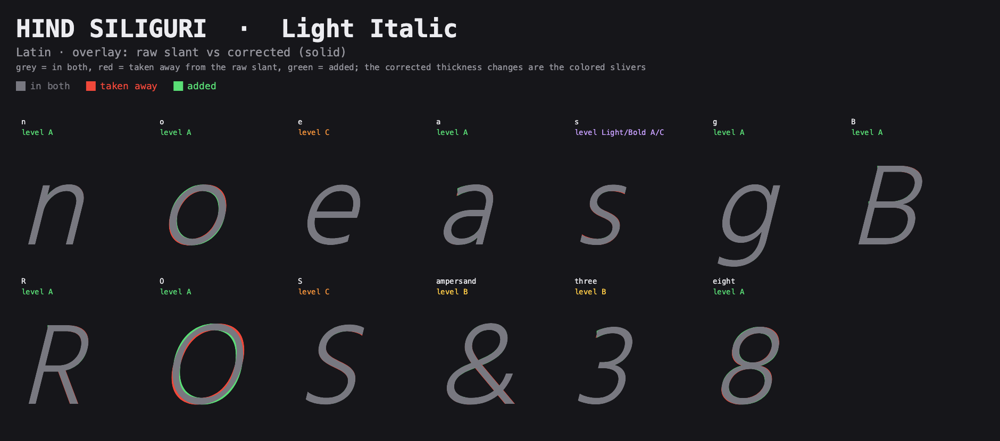
Hind Siliguri Bold Italic
Latin overlay, plain slant against corrected. Red taken away, green added.
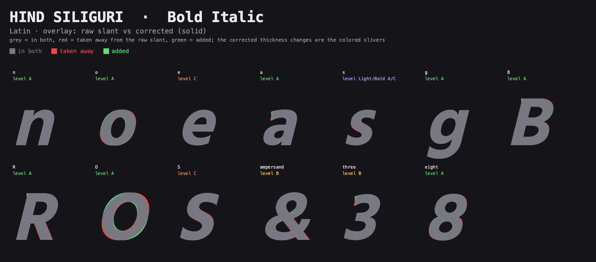
Hind Siliguri Light Italic
Latin: upright, raw slant, corrected, with the shipped level under each name.
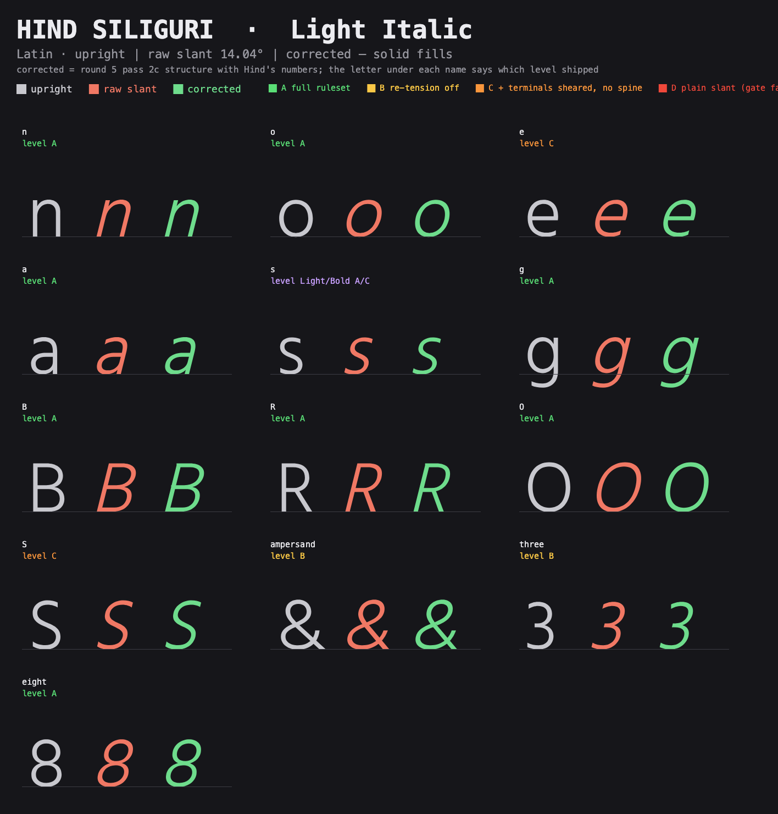
Hind Siliguri Bold Italic
Latin: upright, raw slant, corrected, with the shipped level under each name.
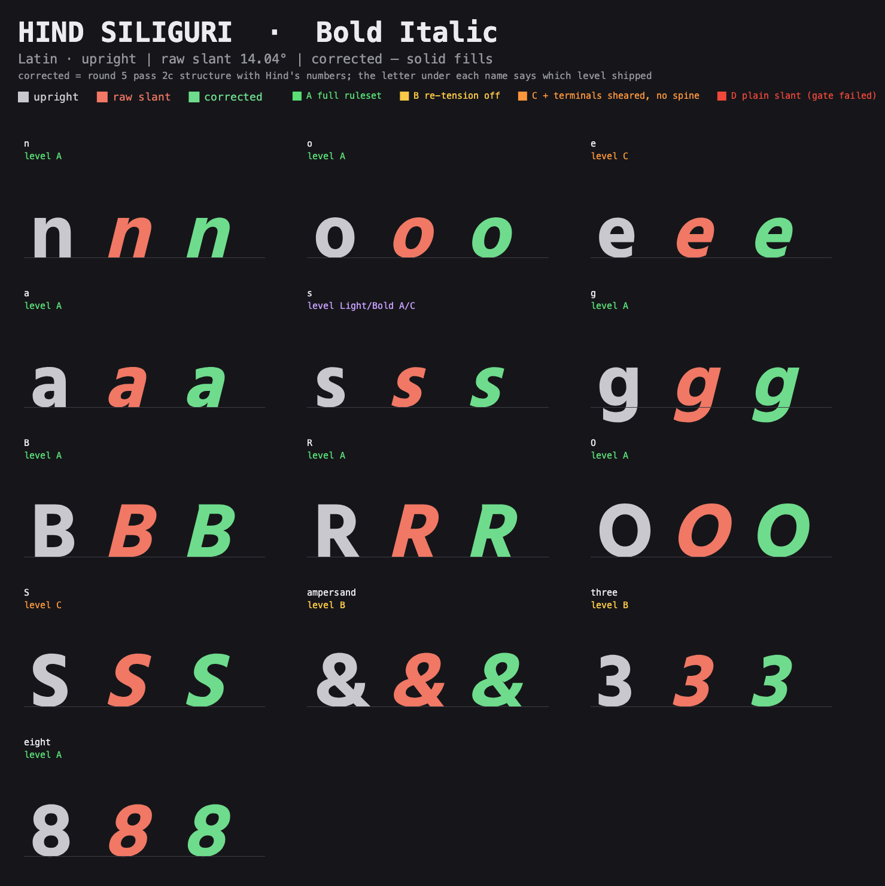
Hind Siliguri Light Italic
Running text, upright above, corrected italic below.
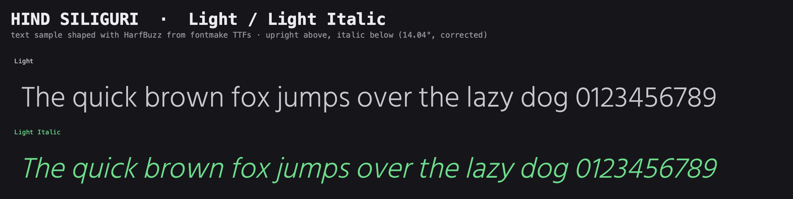
Hind Siliguri Bold Italic
Running text, upright above, corrected italic below.
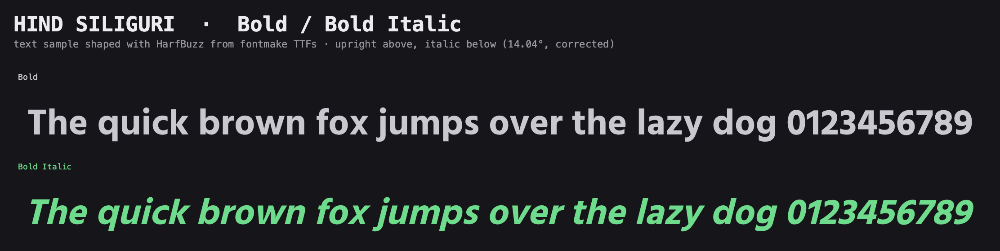
Bangla
Diagonals thin cleanly where the glyph has a backslash stroke: ক খ ঘ ব য র show red slivers along the diagonal in both masters. The bowls and loops of most glyphs show nothing. Digits show nothing in Light.
The Bold sheet contradicts "almost none." In Bold, ঊ (bnU) and ড (bnDDA) show a large red-and-green crescent on the bowl. The whole bowl shifts, thicker on one side. These are the only two clear bowl corrections I found on the Bold sheet, and I cannot tell from the sheet whether the shift is wanted. The pilot's "almost none" holds for the rest.
Hind Siliguri Light Italic
Bangla overlay, plain slant against corrected.
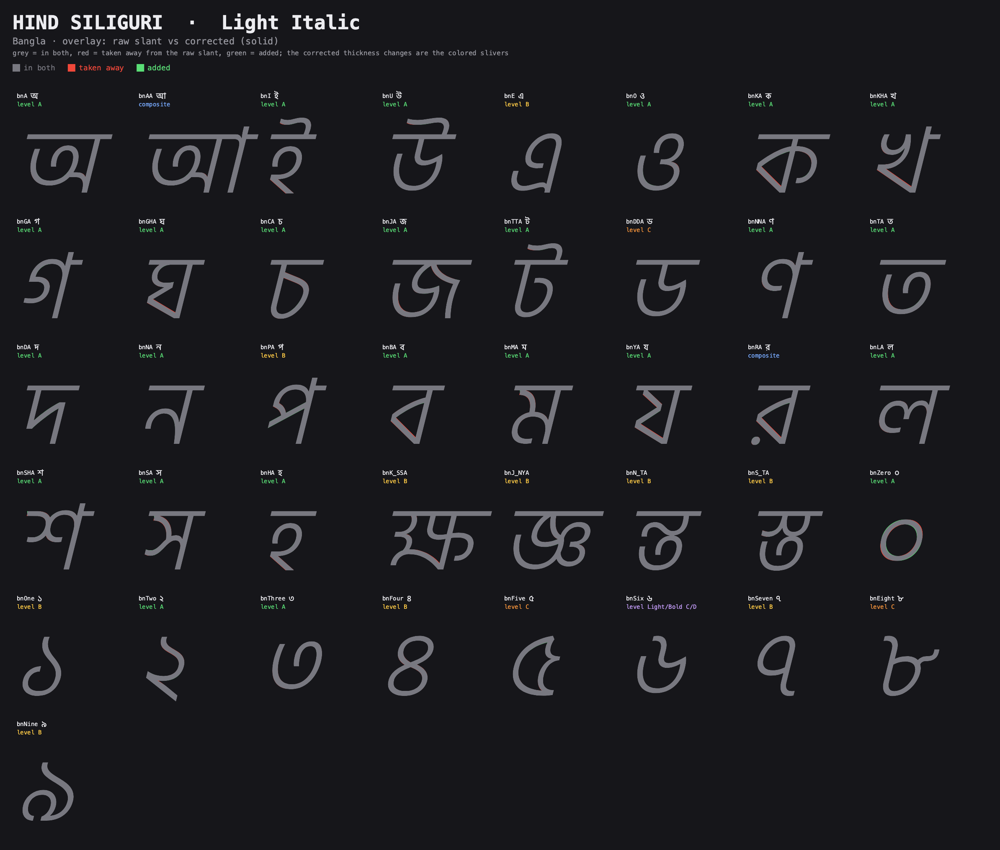
Hind Siliguri Bold Italic
Bangla overlay, plain slant against corrected. Look at ঊ and ড.
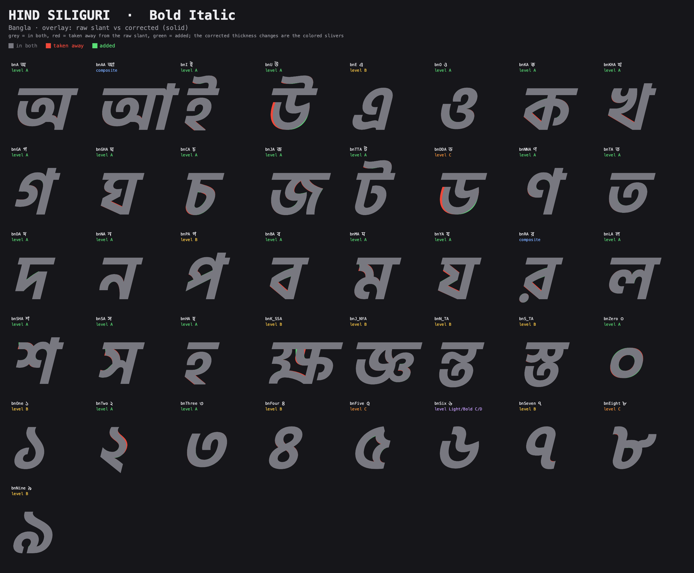
Hind Siliguri Light Italic
Bangla: upright, raw slant, corrected (long sheet).
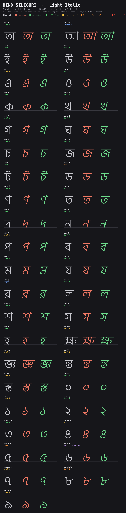
Hind Siliguri Bold Italic
Bangla: upright, raw slant, corrected (long sheet).
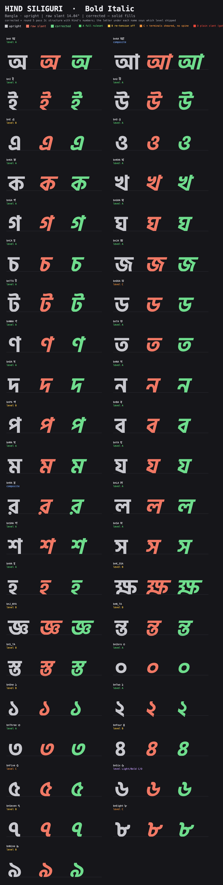
Hind Siliguri Light Italic
Bangla running text, upright above, corrected italic below.
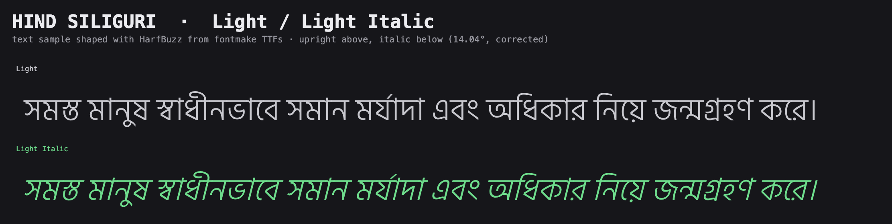
Hind Siliguri Bold Italic
Bangla running text, upright above, corrected italic below.
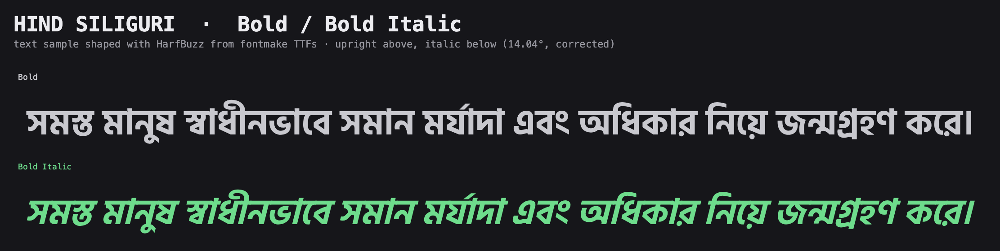
Where it fell back
Every glyph runs a gate for humps and non-finite coordinates. A glyph ships at the highest level that passes in both masters. If none does, each master takes its own best level, labeled "mixed."
| Level | What it drops | All | Bangla | Latin and other |
|---|---|---|---|---|
| A | Nothing. Thickness by direction with re-tension, harmonizer, comb repair. | 423 | 242 | 181 |
| B | Re-tension. It caused most of the humps. | 133 | 114 | 19 |
| C | Also: terminals are sheared, spine is off. | 87 | 66 | 21 |
| D | Everything. Plain slant, in both masters. | 5 | 4 | 1 |
| mixed | Each master takes its own best level. | 51 | 42 | 9 |
| composite | Offsets sheared, not decomposed. | 150 | 9 | 141 |
| empty | No outline. | 3 | 1 | 2 |
The total is 852 glyphs. 694 of the 699 with outlines are corrected in at least one master. These counts match work/levels.json.
Why glyphs fall back
- Re-tension humps. Level B exists because re-tension made most of the humps. s, bnPA, bnJA, e, and bnFour pass without it. B is mostly Bangla: 114 of 133.
- The ii-kar ligatures. Of 30 glyphs with
mIIin the name, 6 reach A, 3 are plain slant in both masters, 20 are mixed, and 1 is a composite. In 19 of the 20 mixed ones the Bold is plain slant. The exception is bnG_DHA_mII: Light is D, Bold is B. The pilot said they fail in Bold at every level. The levels file agrees for 19 of 20, not all. - Digits. Per
levels.json: ০ ২ ৩ reach A. ১ ৪ ৭ ৯ stop at B. ৫ ৮ stop at C. ৬ is mixed C and D. The humps are in curls and terminals. - Mixed means Bold loses. Reading the labels as Light then Bold, 38 of the 51 mixed glyphs have a plain-slant Bold, and 10 have a plain-slant Light. The pilot's report says 39 and 8. I trust the levels file, since the sheets use the same Light/Bold label order. The remaining 3 are A/C and C/B.
- Solver exceptions. scipy least_squares failed on V (Light), and on asterisk, braceleft, and braceright (Bold).
The five plain-slant glyphs
bnN_DH_BA, bnTTHA_mII, bnTTH_RA_mII, bnN_TTHA_mII, and currency. Four are Bangla conjuncts, three of them ii-kar ligatures. They get the same shear as the raw slant, so they are even with the rest of the italic in angle and off only in thickness.
Bangla
The anchor and its cost
The anchor is the full-height verticals (the right stem of ক and ব) plus the headline, both sheared at the italic angle. The headline is a bar, so its shape and thickness stay. Join nodes are junctions, blended with the stroke. On the class map, blue dots are the sheared stems and headline, green dots are plain-shear rounds, and orange dots are terminals.
Hind Siliguri Bold
Class map: which rule carries each on-curve node, read on the upright. Blue sheared, green round, magenta closed round that leans back, yellow junction, orange terminal.
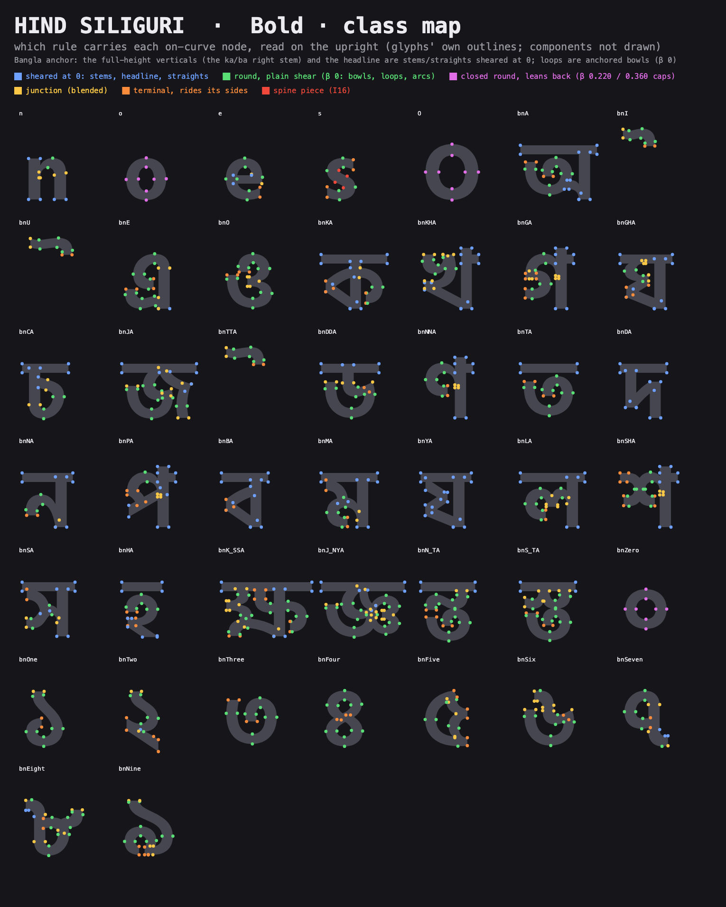
Hind Siliguri Light
Class map, same legend.
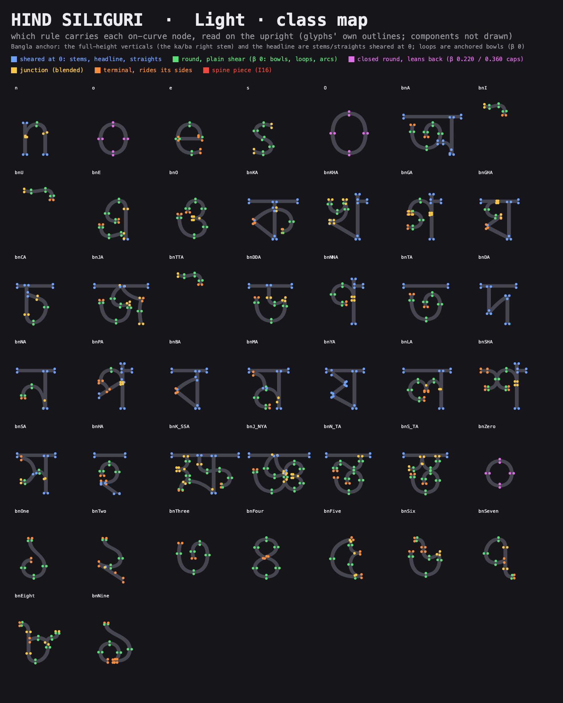
One shear center, y 253.5, is used for both scripts. That keeps mixed Bangla and Latin lines registered. The cost: the headline sits high above the center, so the shear moves it right of the base. At y 634 (Light) the shift is (634 − 253.5) / 4, about 95 units. At y 671 (Bold) it is about 104. The pilot reports about 95 for both. The Bold figure is my arithmetic from the pilot's own Bold headline height.
Loops
Loops are anchored bowls with β 0, which means plain shear, and they are gated. None of the requested consonants fails on a loop. The cost is that loops get no lean-back and almost no thickness correction, because the group rules act only at nodes. ০ is the exception: as a closed free round it leans back, and the Light overlay shows it.
The spine
The rigid spine fit Latin and did not fit Bangla. On the inflected stroke of ১ it fired and failed the gate. The two zoom sheets show ১ Light, spine on (gate false, failing at nodes 2 and 27), then off (gate passes). On the "on" sheet the fan of rungs at the top of the stroke is visibly crowded. I cannot see a needle at this size. The pilot said the top thins to a needle. The sheet shows the failing rung fan, and the gate result is in the title. The spine is now off for Bangla. It also never fires on Latin s at level A, because s has nodes mid-spine.
Hind Siliguri Light Italic
bnOne, spine on. Gate fails.

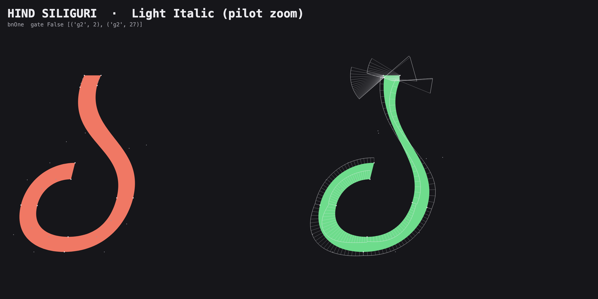
Hind Siliguri Light Italic
bnOne, spine off. Gate passes.

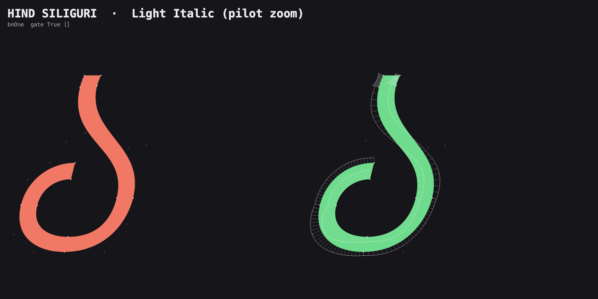
Self-crossing contours
The artefact scan finds 119 glyphs per master with self-crossing contours as drawn: 107 Bangla, mostly conjuncts, loops, and digits, and 12 Latin (a e six nine three ampersand eth oe aogonek ordfeminine partialdiff litre). The same glyphs appear in both masters. No segment is under 3 units. Skia path ops misfill these glyphs, so the overlay sheets use coverage compositing and are accurate.
Best and worst five
Best
- O. The lean-back reads as drawn, in both masters. See the Latin overlay and side-by-side sheets.
- o. Same rule, same result. The overlay shows the bowl thinning on the leaning side. The mean width error barely moves in Light (9.45 to 9.14), so the gain is the lean, not the weight.
- য (bnYA). The backslash diagonal thins cleanly. Light width error 3.73 to 1.25, Bold 7.65 to 2.56, the largest drop of any sheet glyph. See the Bangla overlay sheets.
- ব (bnBA). Same diagonal, same clean result. Light 3.40 to 1.43. See the Bangla overlay sheets.
- R. The leg thins and the bowl holds. Light 3.06 to 1.38, Bold 7.37 to 3.73. See the Latin overlay sheets.
Worst
- e. Level C. A curvature knot where the bar meets the bowl under the full ruleset, so it ships near plain slant. Width error does not move (3.14 to 3.14 Light, 6.78 to 6.78 Bold). See the Latin sheets.
- a and 3. The entry terminal keeps the roman vertical cut, so a wedge shows at the top terminal. See the wedge sheet below. a is level A and 3 is level B.
- B. A wedge at the stem's top left, because the stem end is treated as a stroke end with the roman angle. The sheet shows it at the top left of the stem in Bold. R shows a hint of it too.
- ৬ (bnSix). Mixed C and D. The Bold is plain slant because of humps in the curl. It also carries self-crossing contours.
- bnTTHA_mII and the other ii-kar ligatures. Plain slant in both masters for three of them, plain slant in Bold for most of the rest.
Hind Siliguri Bold Italic
Overlay zoom: B, a, and 3. Green wedge at the entry terminal, red where the cut was taken away.
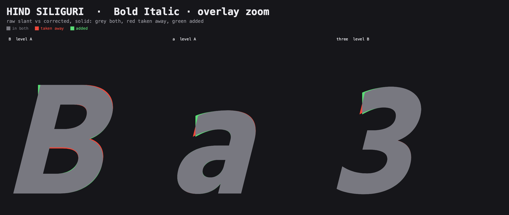
Decisions for Mark
Each is a class question. Answer with a rule. A second run applies it to every glyph in the class.
1. Do sans entry and exit terminals take the slant? Decided: yes, the shear and nothing more.
Mark's rule: terminal cuts never rotate beyond the shear, and the correction never rotates a stroke back toward its roman angle.
Each cut is carried by the shear, so a vertical cut ends up parallel to the slanted stems. Frutiger does the same: all 54 of its vertical cuts follow the slant. Holding the roman cut angle is what made the wedges on a, 3, and B, so they go away. Level C's sheared terminals now follow the rule. The fixes stay in the stroke, such as weight and back-lean, never in the cut's angle.
2. Where is the headline's shear center?
Today: y 253.5 for both scripts, so mixed lines register. The headline shifts right of the base by about 95 units (Light) and 104 (Bold).
Rule to choose: keep 253.5 for registration, or center Bangla on its own mid-height. A Bangla center puts the headline over the base, but Bangla would then sit offset from Latin on a mixed line by a fixed amount. A second run changes every Bangla glyph's x position and the composite offsets. It also changes the sidebearings. Check text sheets with mixed script lines first.
3. Do Bangla bowls lean back? Decided: yes, Frutiger's amount.
Mark's rule: Bangla bowls and loops lean back 0.3–0.4θ, the same as Latin rounds (4–5.6° at 14.04°).
The references disagree. Frutiger leans its rounds back 0.3–0.4θ; Tiro Bangla's Bangla is a plain shear plus a diagonal weight fix, with bowls at about 0. Mark chose Frutiger's, so Latin and Bangla rounds match on mixed lines. The Latin o and p also move up from the pilot's 0.22θ and 0 to Frutiger's values. Expect more Bangla glyphs to fall to B or C at the gate.
4. Do we fix the 107 self-crossing Bangla glyphs in the source?
They are drawn that way in the upright, mostly conjuncts, loops, and digits.
Rule to choose: overlaps are intentional and stay, or they get merged in the upright source first. If merged, the solver reads clean outlines and the humps that come from crossings go away. Some glyphs now at B or C may then pass at A. A second run changes only glyphs where the crossing caused a gate failure, so it also needs the upright masters re-checked for interpolation. Not worth it if the overlaps are deliberate.
5. How do we handle the ii-kar ligatures?
Today: the long hook above the headline fails in Bold at every level in most glyphs. Three are plain slant in both masters.
Rule to choose: the hook is a class of its own, sheared as a rigid piece and excluded from correction, or the solver keeps trying and Bold ships as plain slant. A rigid hook would pass the gate in Bold and bring the 20 mixed glyphs to one level. The base of the ligature would still get corrected. A second run needs a new class in the kit, then a rerun of the 30 mII glyphs only.
Files
- proof/italic-pilot/HindSiliguri-LightItalic.ufo
- proof/italic-pilot/HindSiliguri-BoldItalic.ufo
- proof/italic-pilot/HindSiliguri-Italic.designspace
- proof/italic-pilot/build/italic/HindSiliguri-LightItalic.ttf
- proof/italic-pilot/build/italic/HindSiliguri-BoldItalic.ttf
- proof/italic-pilot/build/italic_vf/HindSiliguri-Italic-VF.ttf
- proof/italic-pilot/work/levels.json (level per glyph)
- proof/italic-pilot/work/results_*.json (gate reports)
- proof/italic-pilot/work/evenness.json, work/artefact_scan.json
- proof/italic-pilot/work/interpolatable_*.txt (the italic, designspace, and upright files are empty, so clean)
- proof/italic-pilot/sheets/ (all the sheets above), sheets/dev/ (debug zooms)
- proof/italic-pilot/tools/ (the pilot's code), kit/ (copied unmodified)
- proof/italic-pilot/index.html (the pilot's own index)